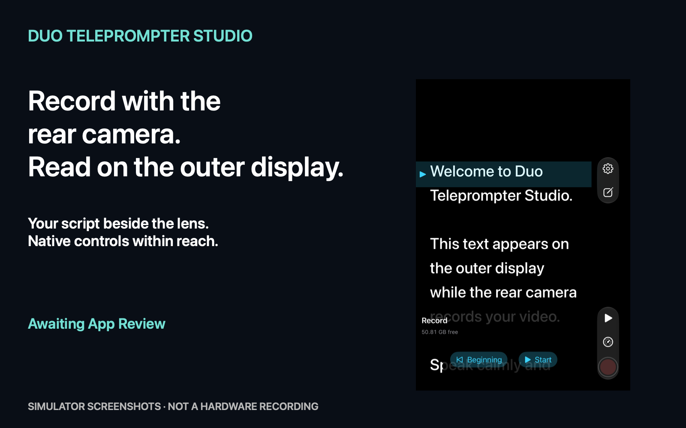

DUO TELEPROMPTER STUDIO
Speak naturally. Stay in frame.
Camera and teleprompter for iPhone Duo.
Record with the rear camera. Read your script on the outer display.

- Record with the rear cameras while reading your script on the outer display of an open iPhone Duo.
- Type, paste or import scripts from TXT, RTF, DOCX and PDF.
- Adjust speed, font size, line spacing and text width. Countdown and optional text mirroring.
- Keep videos with audio inside the app and explicitly save to Photos. German and English.
- The outer view requires an active camera, the app full-screen on the inner display, and an available camera accessory view. No overlay over other camera apps.
One-time purchase. No subscription. No ads. No accounts.